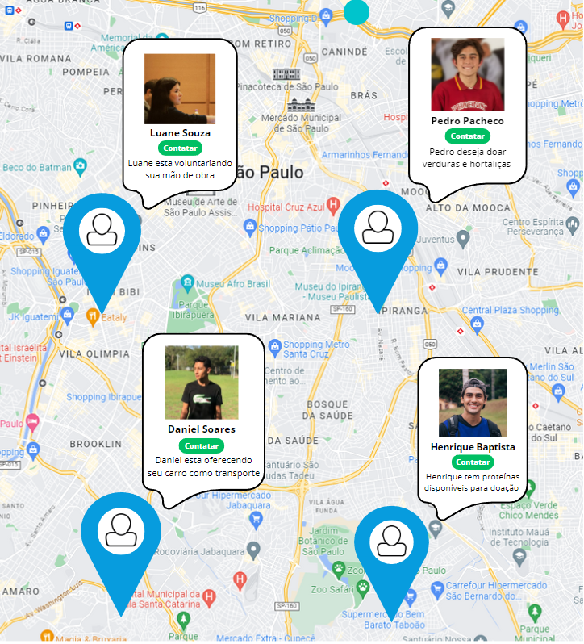

Mapas Inteligentes

Utilizando inteligencia artificiais com geoloczliação, temos planos de desenvolver mapas inteligentes que informar a localização e informações de doadores, ONGs e eventos proximos dinamicamente.
Mapas de Doadores/Usuarios
Doadores que se cadastrarem no Ajuda Segura, podem informar o que eles estão dispostos a doar (seja insumos ou mão de obra), e estas informações são mostradas para ONGs com tais dependencias na região.
Mapas de ONGs
ONGs que se cadastrarem no Ajuda Segura podem informar o que eles estão precisando no momento (seja insumos ou voluntarios). Assim, doadores podem conhecer ONGs proximas, e escolher quem ajudar.
Mapas de Eventos
Eventos ao serem cadastratos, são informados nesse mapa para que usuarios proximos possam confirmar sua presença de uma forma dinâmica. Além disso, você pode conferir as informações do criador do evento.